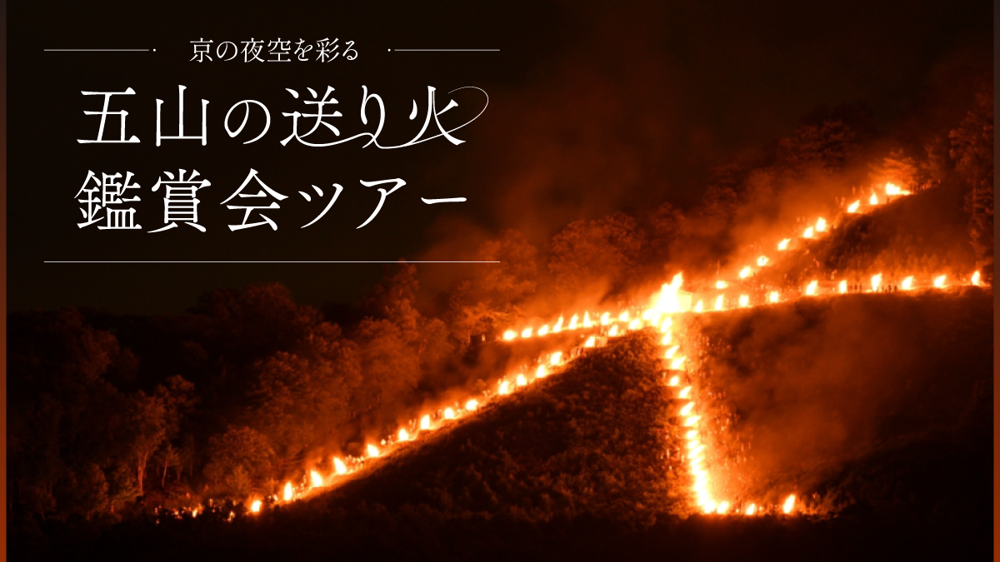
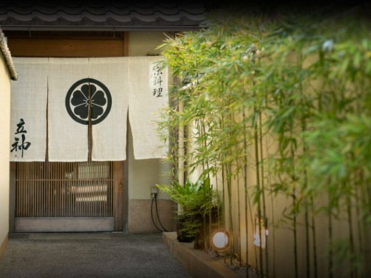
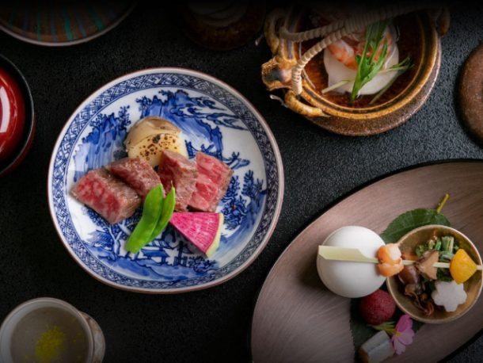

最新の情報は 公式サイトのツアーページ をご覧ください。
【限定40名】京の夜空を彩る「五山の送り火」特別鑑賞ツアー

※大人・子ども同額
※旅行代金には食事代が含まれております。
※お子様にも大人と同じ料理をご提供いたします。
本ツアーの募集は終了いたしました
＜MKトラベルTOPはこちら▶＞
＜おすすめツアーはこちら▶＞
京都の夏を締めくくる伝統行事「五山の送り火」。
毎年8月16日、お盆に迎えたご先祖様の霊を再びお送りするため、京都の山々に静かに火が灯されます。
「大」の文字、「妙法」、「船形」、「左大文字」、そして嵐山の「鳥居形」。
夜の京都に次々と浮かび上がる炎は、どこか幻想的で、古都に受け継がれてきた“祈りの文化”を感じさせます。
本ツアーでは、昼間の嵐山エリアにて「鳥居形」、左大文字・舟形・妙法・右大文字を車窓から巡り、これから灯される送り火の山々を眺めながら、古都・京都に受け継がれてきた夏の風情を感じていただきます。
ご夕食は、京料理「立神」にて、季節の京会席をご用意。
夏の京都らしいお料理とともに、ゆったりとしたひとときをお過ごしください。
そして最後は、西陣織会館の屋上へ――。
特別鑑賞会場より、夜空に浮かび上がる送り火を観賞いただきます。
京都の夜景とともに眺める送り火は、きっと忘れられない夏の思い出になるはずです。
夏の夜風を感じながら、京都ならではの特別な一夜をお楽しみください。
年に一度だけの限定企画。今年は【40名様限定】にてご案内いたします。
行程
| 14:30 | 京都駅八条口MKタクシーのりば （集合・出発） |
| 15:00 | 嵐山・鳥居型 ＜散策＞ |
| ↓ | 左大文字・舟形 ＜車窓から見学＞ |
| ↓ | 北山・妙法 ＜車窓から見学＞ |
| ↓ | 右大文字 <車窓から見学＞ |
| 17:30 | 京料理立神（たてがみ） ＜夕食・会席コース／約90分滞在＞ |
| 19:40 | 西陣織会館 ＜屋上より五山の送り火鑑賞＞ ※立ち見 |
| 21:10頃 | 京都駅（解散） |
※荒天時は送り火が中止となる場合がございます。中止となった場合でもツアーは催行いたします。また、ツアー出発後の旅行代金の返金はございません。
※渋滞等で予定通りの滞在時間をお取りすることができない場合がございます。予めご了承ください。
※送り火鑑賞中は傘はご利用いただけません。雨天の場合に備えてレインコートなど予めご準備ください。
※西陣織会館屋上での鑑賞は、次々と灯る送り火を見るために移動をするので会場に席はなく、立ち見となります。
※西陣織会館屋上からは右大文字が真正面に見えます。ほかに船、妙、法、左大文字が鑑賞可能です。次々に点火する送り火をお楽しみください。
※西陣織会館の屋上から鳥居型はご覧いただけません。
※写真撮影を目的としたツアーではございません。
当日の状況により撮影時間/環境は保証いたしかねます。何卒ご理解のうえご参加お願いいたします。
-

写真はイメージです
-

写真はイメージです
【MKトラベルLINE公式アカウント】
MKトラベルの新規ツアー情報をLINEでお届けいたします

【各SNSでも京都の情報やツアー情報をお届けしています】


旅行条件
| ツアー番号 | T005CD |
| 出発地 | 京都市 |
| 添乗員／ガイド | なし（乗務員がその業務を代行いたします）／なし |
| 食事 | あり（夕食1回） |
| 最少催行人数 | 出発保証（最大40名様） |
お申込みについてのご注意
※旅行条件・旅行代金は、2026年5月1日現在を基準としています。
※行程および帰着時間は交通事情などにより変更になる場合があります。
※お申込みの前に弊社の募集型企画旅行規約をご確認ください。
よくある質問
Q.1名ですが、申し込みできますか？
A.はい。お一人参加の方もたくさんいらっしゃいますので、お気軽にお申し込みください。
Q.参加したかったけど、満席でした。ほかに五山の送り火を鑑賞できるツアーはありますか？
A.「京都の夏を送る夜～御所から望む右大文字と湯葉懐石～」にて右大文字を鑑賞できます。よりお手軽に送り火をお楽しみいただけます。詳細はこちら
本ツアーの募集は終了いたしました
＜MKトラベルTOPはこちら▶＞
＜おすすめツアーはこちら▶＞
・TACPOカード
・クレジットカード決済
・コンビニ決済
お支払方法詳細はこちら
お客様のご都合でご予約をキャンセルされる場合は、すみやかに下記お問合せ先までご連絡ください。
キャンセル料
11日目に当たる日以前
無料
10日目に当たる日以前
20%
7日目に当たる日以前
30%
旅行開始日の前日
40%
旅行開始日の当日
50%
旅行開始後又は無連絡
100%